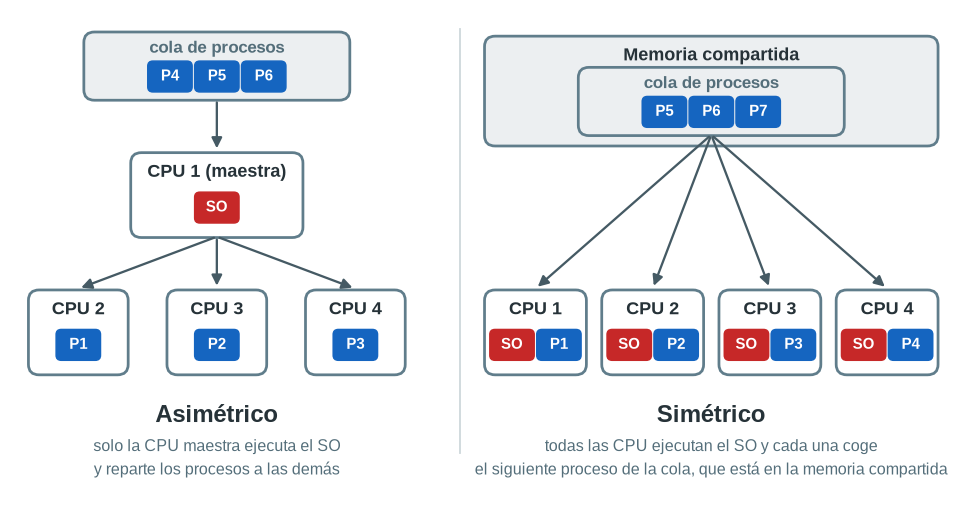

Sistemas operativos#
«Sin su software, la computadora es básicamente un montón de metal inútil» (Andrew S. Tanenbaum).
El Sistema Operativo es el software principal o conjunto de programas de un sistema informático que gestiona los recursos de hardware y provee servicios a los programas de aplicación de software.
El sistema operativo actúa como intermediario entre las aplicaciones y el hardware: gestiona los recursos, su localización y la protección de acceso, lo que alivia a los programadores de aplicaciones de tener que tratar con estos detalles.
Estructura del sistema operativo#
Un sistema informático se puede ver como una serie de capas, en la que cada una utiliza los servicios de la capa inferior:
Hardware: CPU, memoria, discos, periféricos...
Núcleo (kernel): es la parte central del sistema operativo, se carga en memoria al arrancar el equipo y permanece en ella hasta que se apaga. Es el que gestiona directamente el hardware: reparte la CPU entre los procesos, asigna la memoria, accede a los discos y se comunica con los periféricos.
Shell o interfaz: es el programa que permite al usuario comunicarse con el sistema operativo, ya sea escribiendo órdenes en una línea de comandos (bash, PowerShell) o mediante una interfaz gráfica con ventanas y ratón.
Aplicaciones: los programas que utiliza el usuario, como el navegador o el procesador de textos.
Para proteger el sistema, la CPU funciona en dos modos:
Modo núcleo (o modo privilegiado): en él se ejecuta el núcleo, que puede acceder a todo el hardware y a toda la memoria.
Modo usuario: en él se ejecutan las aplicaciones, que no pueden acceder directamente al hardware ni a la memoria de otros programas.
Cuando una aplicación necesita algo que solo puede hacer el núcleo, como leer un archivo, reservar memoria o enviar datos por la red, se lo pide mediante una llamada al sistema (system call). Así, si una aplicación falla, no puede estropear el resto del sistema.
Funciones del sistema operativo#
1. Gestión de procesos#
Un proceso es un programa en ejecución. El sistema operativo se encarga de crear y eliminar los procesos, tanto del usuario como del propio sistema, de planificar qué proceso utiliza la CPU en cada momento y de proporcionar mecanismos para que los procesos se sincronicen, se comuniquen entre sí y no se bloqueen mutuamente.
2. Gestión de memoria#
La memoria principal es un almacén de datos compartido por la CPU y las aplicaciones. La gestión de memoria consiste en asignar memoria a los programas que la solicitan, liberarla cuando terminan y evitar que un programa acceda a la memoria de otro, una tarea de suma importancia para el funcionamiento del sistema. Cuando la memoria RAM no es suficiente, el sistema operativo puede utilizar parte del disco como si fuera memoria, lo que se conoce como memoria virtual.
3. Gestión del sistema de archivos#
El sistema operativo organiza los datos de los dispositivos de almacenamiento (discos, pen-drives...) en archivos y directorios (carpetas). Se encarga de crear, leer, modificar y borrar archivos, de saber en qué parte del disco está guardado cada uno y de controlar quién puede acceder a ellos. La forma de organizar los datos en el disco es el sistema de archivos, por ejemplo NTFS en Windows, ext4 en GNU/Linux o FAT32 en los pen-drives.
4. Gestión del arranque#
El sistema operativo se encarga de poner en marcha el equipo desde que se enciende hasta que el usuario puede trabajar con él. El arranque sigue esta secuencia:
El firmware de la placa base (BIOS o UEFI) comprueba el hardware y busca un dispositivo desde el que arrancar.
El cargador de arranque (por ejemplo GRUB en GNU/Linux o el Administrador de arranque de Windows) carga el núcleo del sistema operativo en memoria. Si hay varios sistemas operativos instalados, muestra un menú para elegir cuál arrancar; esta parte se llama gestor de arranque.
El núcleo detecta el hardware, carga los controladores y pone en marcha los servicios del sistema.
Por último se muestra el inicio de sesión para que el usuario pueda entrar.
5. Gestión del sistema de entrada y salida#
Se encarga de gestionar los dispositivos de entrada y salida del ordenador, los periféricos: el monitor, el teclado, el ratón, la impresora, los auriculares, un pen-drive... Para comunicarse con cada dispositivo el sistema operativo utiliza un controlador (driver), un programa que sabe manejar ese hardware concreto. Los dispositivos avisan al sistema operativo de que tienen datos o han terminado una tarea mediante interrupciones, de forma que la CPU no tiene que estar preguntándoles continuamente.
6. Administración de usuarios#
El sistema operativo gestiona las cuentas de usuario y los grupos: crea y elimina usuarios, comprueba sus contraseñas al iniciar sesión y guarda la configuración de cada uno (su perfil y su carpeta personal).
7. Protección y seguridad#
El sistema operativo controla qué puede hacer cada usuario y cada proceso mediante permisos: quién puede leer, modificar o ejecutar cada archivo, qué usuarios pueden instalar programas o cambiar la configuración del sistema (los administradores) y cuáles no. También aísla los procesos entre sí para que un programa no pueda acceder a los datos de otro.
8. Gestión de red#
El sistema operativo incluye todo lo necesario para que el equipo se comunique con otros a través de la red: los controladores de las tarjetas de red, los protocolos de comunicación (TCP/IP) y los servicios para compartir archivos e impresoras.
Clasificación de Sistemas Operativos#
Los sistemas operativos se pueden clasificar de acuerdo a diferentes criterios
Por el número de usuarios
Monousuarios
Multiusuarios
Por el número de tareas
Monotarea
Multitarea
Por el número de procesadores
Monoprocesador
Multiprocesador
Simétrico
Asimétrico
Por el tipo de núcleo
Monolítico
Microkernel
Híbrido
Por su uso
Escritorio
Servidor
Móvil
Embebido
Tiempo real
Por su interfaz
Texto (CLI)
Gráfica (GUI)
Por el número de usuarios#
Los sistemas operativos monousuario o monopuesto son aquellos en los que solo una persona puede utilizar el sistema a la vez; aunque se puedan crear varias cuentas, solo hay una sesión de trabajo activa. Los sistemas operativos multiusuario o multipuesto son capaces de dar servicio a varios usuarios al mismo tiempo, por ejemplo varios usuarios conectados a un servidor por SSH, cada uno con sus propios programas en ejecución.
Por el número de tareas#
Los sistemas monotarea son aquellos que solo permiten una tarea a la vez por usuario; los multitarea permiten tener varias tareas activas al mismo tiempo.
Por ejemplo, MS-DOS es monousuario y monotarea, Windows 95 es monousuario y multitarea, y UNIX y GNU/Linux son multiusuario y multitarea.
Por el número de procesadores#
Los sistemas monoprocesador son los que solo cuentan con una CPU; aun así pueden simular la multitarea repartiendo el tiempo de CPU entre los procesos con un intercambio muy rápido. Los sistemas multiprocesador disponen de varias CPUs y pueden ser simétricos, que distribuyen la carga de procesamiento por igual entre todos los procesadores, o asimétricos, en los que los procesadores tienen papeles distintos (por ejemplo, un procesador maestro reparte el trabajo entre los demás). Los procesadores actuales tienen varios núcleos en un mismo chip, y el sistema operativo los utiliza como un multiprocesador simétrico.

Por el tipo de núcleo#
Monolítico: todo el sistema operativo (gestión de procesos, memoria, archivos, controladores...) se ejecuta dentro del núcleo, en modo núcleo. Es muy rápido, pero un fallo en un controlador puede bloquear todo el sistema. Por ejemplo, Linux.
Microkernel: el núcleo es muy pequeño y solo hace lo imprescindible; el resto de funciones, como los controladores o el sistema de archivos, se ejecutan como procesos en modo usuario. Es más seguro y estable, pero más lento. Por ejemplo, MINIX o QNX.
Híbrido: combina las dos ideas, con un núcleo que incluye las funciones más importantes para ganar velocidad y deja otras fuera. Por ejemplo, Windows y macOS.
Por su uso#
Escritorio: pensados para ordenadores personales, con interfaz gráfica y fáciles de usar. Por ejemplo, Windows 11, macOS o Ubuntu.
Servidor: pensados para ofrecer servicios a otros equipos a través de la red, funcionando de forma continua y con muchos usuarios. Por ejemplo, Windows Server o Ubuntu Server.
Móvil: pensados para teléfonos y tabletas, con pantalla táctil. Por ejemplo, Android o iOS.
Embebido: integrados en aparatos con una función concreta, como routers, televisores, coches o electrodomésticos.
Tiempo real: garantizan que cada tarea se ejecuta en un tiempo máximo fijado, algo imprescindible en sistemas como los frenos de un coche, un avión o un robot industrial. Por ejemplo, QNX o FreeRTOS.
Por su interfaz#
Texto (CLI, Command Line Interface): el usuario se comunica con el sistema escribiendo órdenes. Por ejemplo, MS-DOS o un servidor GNU/Linux sin entorno gráfico.
Gráfica (GUI, Graphical User Interface): el usuario se comunica con el sistema mediante ventanas, iconos y el ratón o la pantalla táctil. Por ejemplo, Windows o macOS.